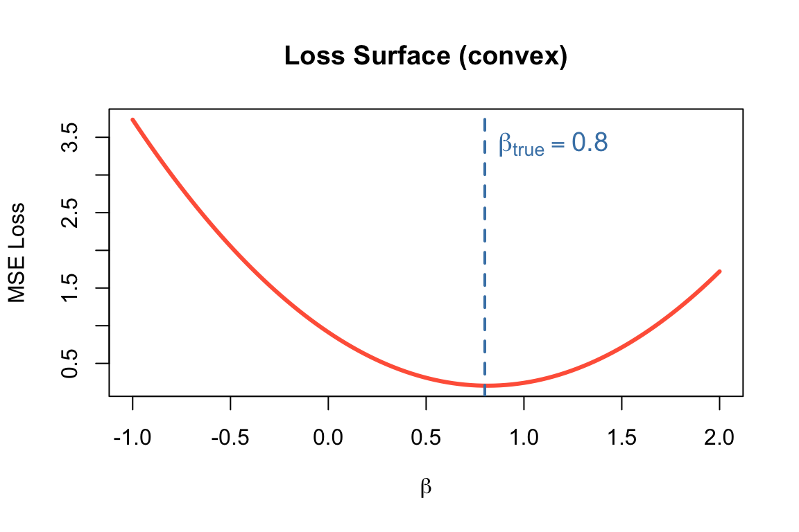
Quick Introduction to Deep Learning
GENE 46100 — Unit 00
Haky Im
2026-03-25
Course Roadmap
| Unit | Question | Topic | Weeks |
|---|---|---|---|
| 0 | What is DL? Can we detect regulatory motifs in DNA? | MLP, CNN, DNA scoring | 1–3 |
| 1 | Can we learn the “language” of DNA? | Transformers & Genomic GPT | 4–5 |
| 2 | Can we predict gene regulation from sequence? | Enformer & Borzoi | 6–7 |
| 3 | Can we model microbial communities? | 8–9 |
Tools we’ll use:
- Python + PyTorch
- Google Colab (GPU)
- Weights & Biases
By the end: You’ll understand how state-of-the-art models predict gene expression from DNA sequence and apply DL to microbiome and other areas.
What Can Deep Learning Do in Genomics?
- Predict TF binding from DNA sequence alone
- Score regulatory variants without experiments
- Predict gene expression from 200kb of sequence (Enformer)
- Generate protein structures (AlphaFold)
- Build DNA language models that learn grammar of the genome
These models learn patterns we didn’t know to look for.
Today’s Learning Objectives
- Understand and implement gradient descent to fit a linear model
- See why linear models fail on nonlinear data
- Build a multi-layer perceptron (MLP) that succeeds
- Learn the basics of PyTorch: model, loss, optimizer
Part 1: Linear Models
Let’s start with a linear model
\[y = X\beta + \epsilon ~~~~~ \text{where }\epsilon \sim N(0, \sigma)\]
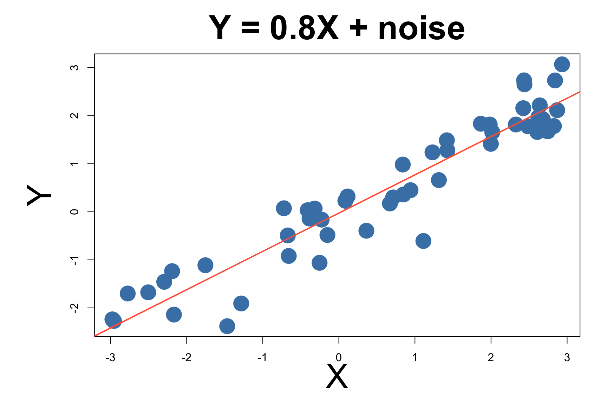
Linear Model Has Closed Form Solution
For linear regression, there’s a closed-form solution:
\[\hat{\beta} = (X^TX)^{-1}X^Ty\] this is called the normal equation.
Estimated: \(\hat{\beta} \approx\) true \(\beta\)
Most Models Don’t Have Closed Form Solutions
The normal equation works for linear models…
- Neural networks with millions of parameters
- Nonlinear activation functions
- Complex architectures
We need a general-purpose optimization method.
Part 2: Gradient Descent
What is a Gradient?
A gradient is the derivative of a function — it tells us the slope.
\[f'(\beta) = \lim_{\Delta\beta \to 0} \frac{f(\beta + \Delta\beta) - f(\beta)}{\Delta\beta}\]
- Positive gradient → function is increasing → move left
- Negative gradient → function is decreasing → move right
- Zero gradient → you’re at a minimum (or maximum)
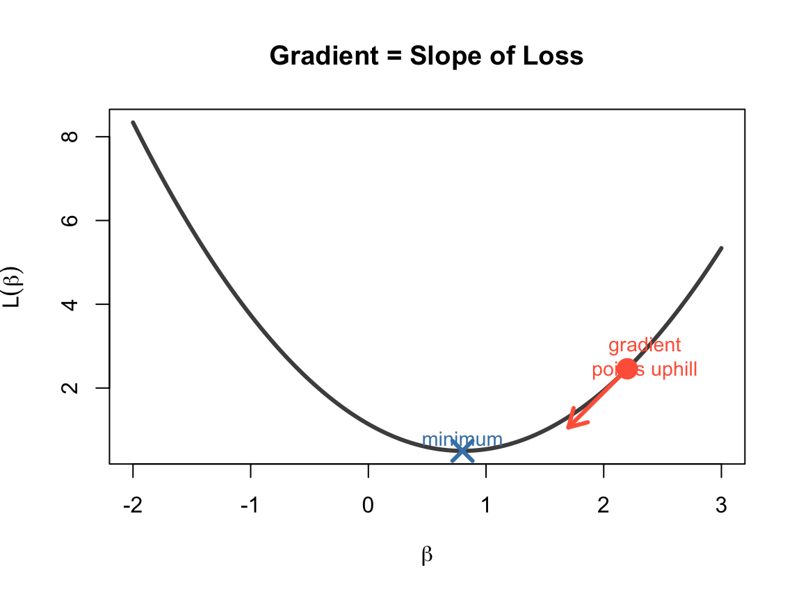
Gradient Descent: Follow the Slope Downhill

Algorithm:
- Start at a random \(\beta\) (high loss)
- Compute the gradient (slope)
- Take a step opposite to the gradient
- Repeat until convergence
\(\beta_{t+1} = \beta_t - \alpha \cdot \nabla L(\beta_t)\)
\(\alpha\) = learning rate (step size)
The Learning Rate \(\alpha\)
Too small (\(\alpha = 0.0001\))
Just right (\(\alpha = 0.003\))
Too large (\(\alpha = 0.1\))
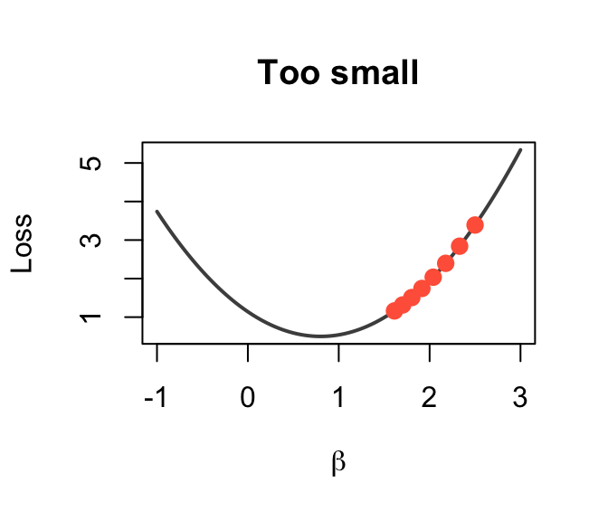
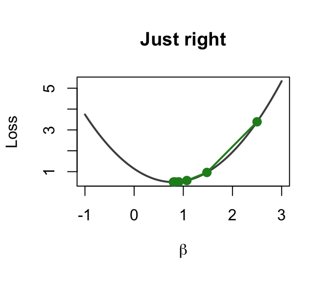
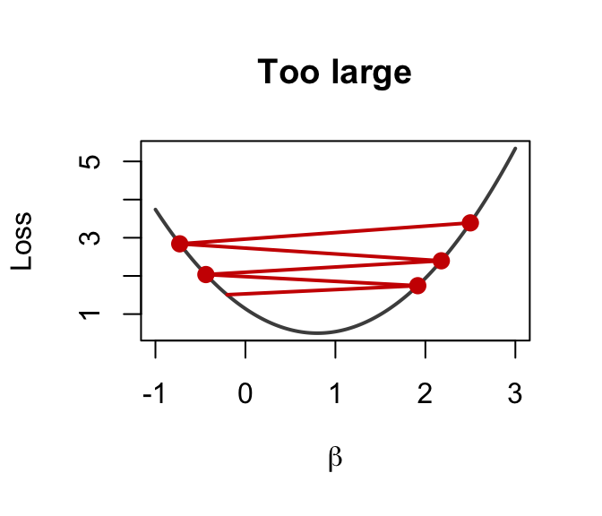
Tiny steps → very slow
Smooth convergence
Overshoots → diverges!
GD Trajectory: Watching \(\beta\) Converge
Stochastic Gradient Descent (SGD)
In practice, computing gradients on all data is expensive.
Solution: use a random mini-batch at each step. \[\nabla L \approx \frac{1}{|B|} \sum_{i \in B} \nabla L_i\]
Stochastic Gradient Descent (SGD)
Full-batch GD:
- Exact gradient
- Slow per step
- Smooth path
SGD (mini-batch):
- Approximate gradient
- Fast per step
- Noisy but effective path
The noise actually helps escape bad local minima!
Part 3: The ML Framework
Three Components of Machine Learning
Every ML model needs these three ingredients:
- Model — \(\hat{y} = f(x)\): defines the hypothesis
- Loss — \(L(\hat{y}, y)\): measures how wrong we are
- Optimizer — \(\beta \leftarrow \beta - \alpha \nabla L\): updates params to reduce loss
| Component | Linear regression | Neural network |
|---|---|---|
| Model | \(y = X\beta\) | \(y = W_2 \sigma(W_1 x + b_1) + b_2\) |
| Loss | MSE | MSE, cross-entropy, … |
| Optimizer | Normal equation | SGD, Adam, … |
The Loss Function: MSE
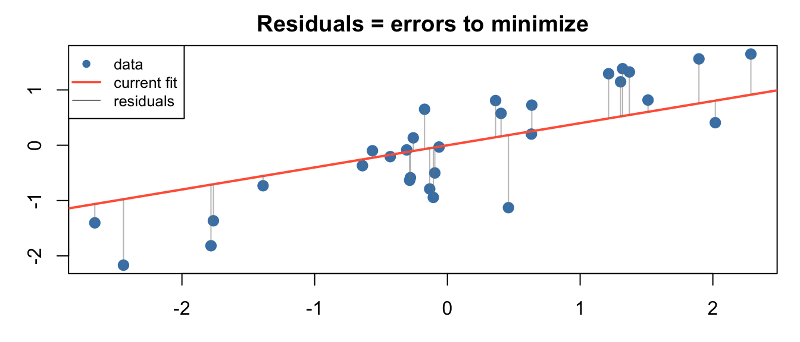
Mean Squared Error: \[L(\beta) = \frac{1}{m}\sum_{i=1}^{m} (\hat{y}^{(i)} - y^{(i)})^2\]
Its gradient (for linear model):
\[\frac{\partial L}{\partial \beta_j} = \frac{1}{m}\sum_{i} (\hat{y}^{(i)} - y^{(i)}) \cdot x_j^{(i)}\]
See It Live: Fit a Line in the Playground
Settings:
- Problem type → Regression
- Dataset → Linear (\(\beta\)x) (linear data)
- 1 hidden neuron, Linear activation
- Hit ▶ Play
Watch the loss curve drop as the gradient descent finds the optimal \(w\) and \(b\).
Try changing the learning rate — see it converge faster or explode.
Linear Model Succeeds — On Linear Data
The playground fits \(y = wx + b\) perfectly on the linear dataset.
But what if the data isn’t linear?
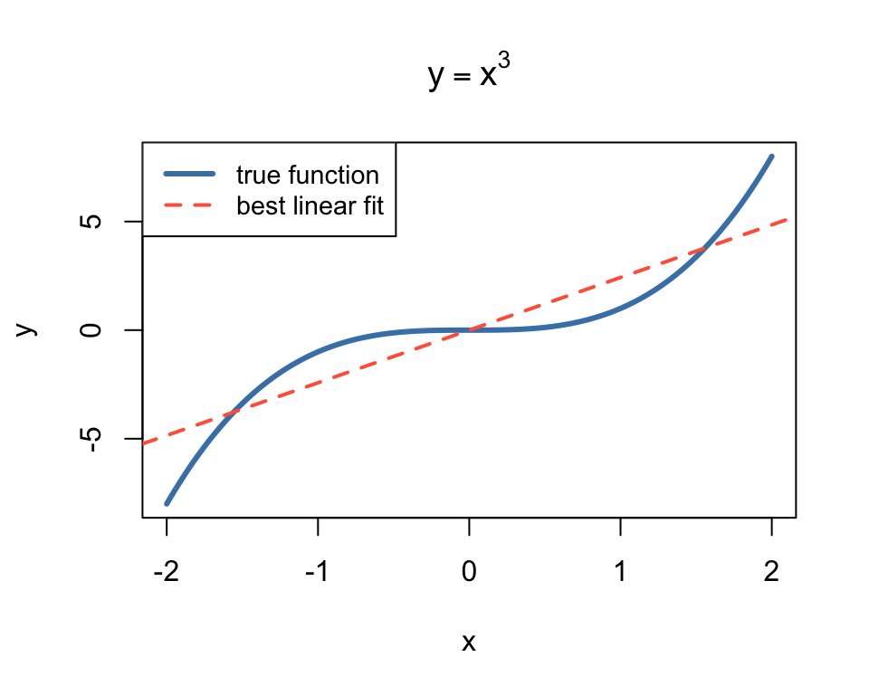
The best possible linear fit to \(y = x^3\) is still terrible.
No amount of training will fix this — the model is wrong, not the optimizer.
Try Cubic Data in the Playground
Switch to dataset → Cubic (\(y \approx x^3\))
Keep: 1 neuron, Linear activation
Hit ▶ Play and wait…

Loss stays high. The best linear fit is a flat plane through a curve.
No matter how long you train — a linear model can’t bend.
We need a model that can learn any shape
- A model that can learn any shape
- Without us specifying the functional form
- From data alone
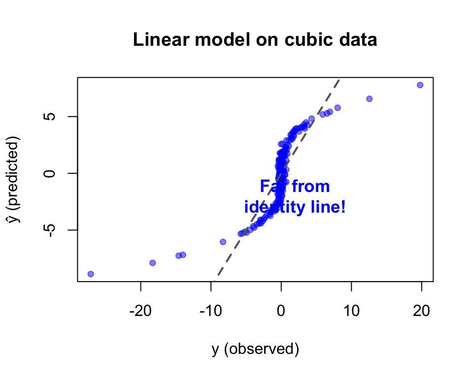
Solution: add nonlinearity → build a neural network.
Part 4: Neural Networks
Multi-Layer Perceptron (MLP)

A neural network with:
- Input layer: your features
- Hidden layer(s): with nonlinear activation
- Output layer: prediction
\[y = W_2 \cdot \sigma(W_1 x + b_1) + b_2\]
Key insight: \(\sigma\) (activation function) introduces the bends that let the model fit curves.
What Does a Neuron Do?
activation
x₁ ──w₁──┐ function
├──▶ Σ ──▶ σ(·) ──▶ output
x₂ ──w₂──┘ +bWithout activation (linear):
\(\text{output} = w_1 x_1 + w_2 x_2 + b\)
Just a weighted sum — still a line!
With ReLU activation:
\(\text{output} = \max(0, w_1 x_1 + w_2 x_2 + b)\)
Now it can produce a kink — a bent line!
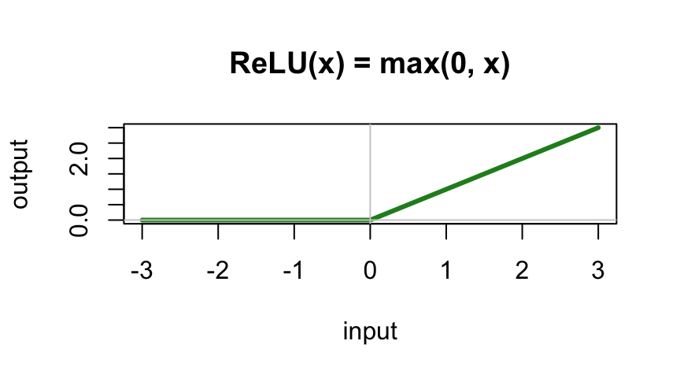
Building Up: 2 Neurons = 2 Bends
Change activation → ReLU
Set hidden layer → 2 neurons
Hit ▶ Play
Select Pred vs True to show the scatter plot
Each neuron contributes one ReLU “kink.” Combined, they approximate a curve — but it’s rough.
Loss is lower, but the fit isn’t great yet.
4 Neurons = 4 Bends = Smoother
Increase to 4 neurons
Hit ▶ Play
Select Pred vs True to show the scatter plot

More neurons = more “kinks” = smoother approximation of \(x^3\).
Adding Depth: 2 Layers (4 → 2)
Add a second layer: 4 neurons → 2 neurons
Hit ▶ Play

Layer 1 learns basic bends → Layer 2 combines them into a smooth curve.
Stacking layers = composing simple features into complex functions.
The MLP Progression — Summary
LINEAR (1 neuron, no activation) 2 NEURONS + ReLU
┌────────────────────────┐ ┌────────────────────────┐
│ ────────────── │ │ ─────╱ │
│ flat line │ │ ╱────── │
│ can't bend! │ │ two bends │
└────────────────────────┘ └────────────────────────┘
4 NEURONS + ReLU 2 LAYERS (4→2) + ReLU
┌────────────────────────┐ ┌────────────────────────┐
│ ╱‾‾‾╲ │ │ ╱‾‾‾╲ │
│ ─────╱ ╲───── │ │ ─────╱ ╲───── │
│ four bends │ │ smooth curve │
└────────────────────────┘ └────────────────────────┘A neural network approximates any function by combining simple bent lines.
Counting Parameters
Example: count parameters for this network:
- Input: 2 features
- Hidden: 3 neurons
- Output: 1
x₁ ──┬──▶ h₁ ──┐
├──▶ h₂ ──┼──▶ ŷ
x₂ ──┴──▶ h₃ ──┘. . .
Layer 1: 2×3 weights + 3 biases = 9
Layer 2: 3×1 weights + 1 bias = 4
Total: 13 parameters
Manually computing gradients for 13 parameters is tedious. For millions? Impossible.
This is why we need PyTorch.
Why the Activation Function Matters
Without activation, stacking layers is pointless:
\[W_2(W_1 x) = (W_2 W_1) x = W'x\]
Any number of linear layers = one linear layer!
Try it yourself: set activation to “Linear” in the playground. Add as many layers as you want — the output is always a flat gradient.
Why the Activation Function Matters
The activation function breaks linearity, allowing each layer to add new “bends.”
Common activations:
- ReLU: \(\max(0, x)\) — fast, simple
- Tanh: \(\frac{e^x - e^{-x}}{e^x + e^{-x}}\) — S-curve
- Sigmoid: \(\frac{1}{1+e^{-x}}\) — for probabilities
Universal Approximation Theorem
An MLP with a single hidden layer can approximate any continuous function to arbitrary accuracy, given enough hidden neurons.
In playground terms: with enough neurons, you have enough bends to trace any curve.
What this doesn’t tell you:
- How many neurons you need
- Whether it will learn efficiently
- Whether it will generalize to new data
Part 5: From Playground to PyTorch
From Playground to PyTorch
The playground does everything behind the scenes. In PyTorch, you write it:
1. Define the model:
PyTorch ↔︎ Playground
| PyTorch code | Playground equivalent |
|---|---|
MLP(input_dim, hid_dim, output_dim) |
Network architecture (boxes) |
F.relu(...) |
Activation dropdown |
model(x) |
Data flows through network |
loss_fn(y_hat, y) |
Loss number updates |
loss.backward() |
Gradients computed (invisible in playground) |
optimizer.step() |
Weights change, output updates |
lr=0.001 |
Learning rate slider |
PyTorch gives you full control over what the playground hides.
The Training Loop — Visually
%%{init: {'theme': 'base', 'themeVariables': {'fontSize': '22px', 'nodePadding': 16}}}%%
flowchart LR
A[Input Data] --> B["Forward Pass<br/>model(x)"]
B --> C["Compute Loss<br/>loss_fn(ŷ, y)"]
C --> D["Backward Pass<br/>loss.backward()"]
D --> E["Update Params<br/>optimizer.step()"]
E --> B
Each iteration of this loop = one “tick” of the playground.
The Learning Curve
Plot loss vs epoch to monitor training:
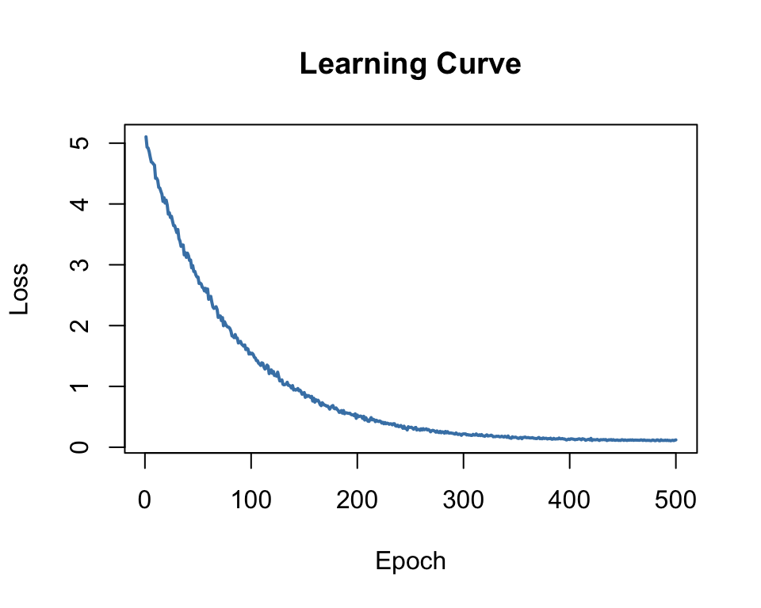
- Dropping = model is learning
- Flat = converged (or stuck)
- Increasing = learning rate too high!
Part 6: Wrap-Up
Your Turn: Explore the Playground
Open playground.hakyimlab.org and try:
- Regression → Cubic: increase neurons from 1 to 8 — watch the fit improve
- Switch to Classification → Circle: same idea, different task
- Set activation to Linear — can it ever fit a curve or separate a circle?
- Crank learning rate to 1.0 — what happens to the loss?
- Turn on “Show test data” — is a big network overfitting?
What’s Next: CNN for DNA
Next lecture: How do we feed DNA to a neural network and scan for motifs?
- Encode DNA as a matrix (one-hot encoding)
- Use convolutional neural networks to detect sequence patterns
- Learned CNN filters turn out to resemble known motifs (PWMs)
Unit 0 Plan: Weeks 1–3
| Session | Topic | Notebook |
|---|---|---|
| Week 1a | Setup, intro | (this lecture) |
| Week 1b | Linear → MLP in PyTorch | notebook-01-intro-mlp |
| Week 2a | CNN concepts | (slides-02) |
| Week 2b | CNN for DNA scoring | notebook-03-dna-cnn |
| Week 3a | TF binding project | notebook-04-tf-binding |
| Week 3b | Hyperparameter tuning | notebook-05-tf-binding-wandb |
What’s Coming Next
Unit 1: Transformers & GPT
- Attention mechanism
- Karpathy’s nanoGPT
- Train a DNA language model
- Fine-tune for promoter prediction
Unit 2: Enformer & Borzoi
- Predict epigenome from 200kb DNA
- Variant effect prediction
- Connection to GWAS/PrediXcan
The arc: MLP → CNN → Transformer → Genomic foundation models
Resources
Videos:
- 3Blue1Brown: Neural Networks — beautiful visual intuition
- Karpathy: Building GPT from scratch — we’ll use this in Unit 1
Interactive:
- playground.hakyimlab.org — experiment with MLP architecture interactively
- playground-guide.md — reference for all playground controls
Getting Started
Environment: Google Colab (GPU provided, no local setup needed)
First notebook: hands-on-introduction_to_deep_learning.ipynb
Questions?
GENE 46100 · Deep Learning in Genomics